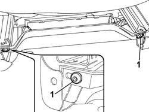
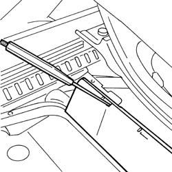
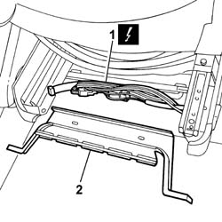

7045D82 <x>REAR TRIM FOR RIGHT FRONT SEAT CABLE LOOM - R.& R.</x>
- Path
- Procedures > 70 FITTINGS > 7045 FRONT SEATS > 7045D RIVESTIMENTO/IMBOTTITURA SEDILI ANTERIORI > 7045D82 <x>REAR TRIM FOR RIGHT FRONT SEAT CABLE LOOM - R.& R.</x>
- Kind
- repair procedure (removal / refitting; the operation number is the code)
- Applies to
- all engines; all production periods
- Interactive page
- https://sloeber94.github.io/elrnDB-fUlss/en/#/179007870
Applies to: all engines; all production periods
 Removing
Removing
 Refitting
Refitting
Applies to: all engines; all production periods

Applies to: all engines; all production periods

Topics that link to this page (5)
- 7045A34 MANUAL DEVICE FOR ADJUSTING SEAT HEIGHT - R R WITH SEAT REMOVED
- 7045A36 DRIVERS SEAT MANUAL HEIGHT ADJUSTMENT DEVICE - R R
- 7045B06 GUIDE BUSH FOR (ONE), FRONT SEAT HEAD RESTRAINT LEFT OR RIGHT - R.R.
- 7045J50 DRIVER'S SIDE FRONT SEAT POSITION MEMORISATION SYSTEM ECU - R+R FOLLOWING ELECTRICAL WIRING CHECK
- 7065A14 ANCHORAGE ROD FOR , (ONE), FRONT SEAT BELT LEFT OR RIGHT - R.R.